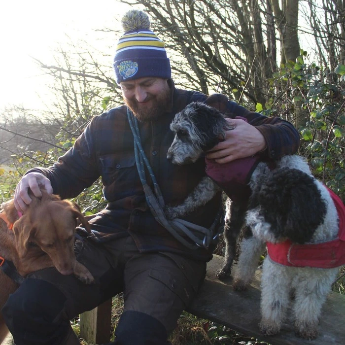

Our Services
Yorkshire Canine Care is a family-run business driven by a simple yet profound mission to provide a comprehensive range of services tailored to the diverse needs of dog owners.
We operate in and around Barwick in Elmet, Aberford, Scholes, Garforth and Micklefield. If you are in the area and need a help with your pooches, give us a call on 07881 211945.
Dog Walking
Ranging from group walks to one to ones, Yorkshire Canine Care will give your dog the stretch it needs.
FIND OUT MORE
Home Visits
Taking some time away? Why not consider one of our home visit packages.
FIND OUT MORE
Dog Day Care
Would you rather come to us than we come to you? Look into our dog day care service for more details.
FIND OUT MORE
MEET OUR TEAM
Our team, a group of seasoned professionals, not only possess a wealth of experience but also share a genuine love for dogs. Coupled with our commitment to deliver outstanding service, it ensures that your furry friend is in the best hands.
WARREN
Warren, the founder of Yorkshire Canine Care, brings a unique blend of military precision and a deep passion for canine companionship to his approach. This distinctive combination, honed over 20 years of military experience, results in top-notch services for your furry friends. His unparalleled discipline, reliability, and leadership skills seamlessly translate into exceptional dog care.
For over 24 years, Warren has worked with dogs of all breeds, gaining invaluable hands-on experience and developing an intuitive understanding of canine behaviour. This extensive background is complemented by a suite of professional qualifications, including:
Level 3 Award in Dog Walking
Level 3 Award in Pet Sitting
Level 3 Award in Canine Emergency First Aid
Level 3 Certificate in Dog Grooming
Level 3 Certificate in Dog Day Care and Home Boarding

KAIYA
With over 10 years of experience working with animals and a background as a trained Medical Technician, Kaiya is dedicated to providing exceptional dog walks. Kaiya holds qualifications in Dog Walking, Pet Sitting, Canine First Aid, Dog Day Care, and Home Boarding.
As a leading dog walker, Kaiya ensures that every walk is tailored to the needs of each dog, promoting both their physical and mental well-being. Beyond her hands-on care, Kaiya also manages our social media presence, sharing engaging updates and insights about our services. Her posts keep our community connected and informed about the fun and activities your pets are enjoying. Kaiya's dedication to excellence and innovative approach make her an essential part of our team, ensuring that Yorkshire Canine Care continues providing top-tier services.
CLAIRE
Claire is the newest Yorkshire Canine Care member, bringing over a decade of experience working with dogs of all breeds and temperaments. Her dedication to animal welfare and professional expertise make her a standout in the field of canine care, ensuring your pets are in good hands.
Known for her compassionate nature and professional approach, Claire builds strong, trusting relationships with dogs and their owners. She believes in personalised care, ensuring every dog feels comfortable, safe, and loved. Claire's commitment to excellence and her genuine love for animals shines through in everything she does.
WARREN
Warren, the founder of Yorkshire Canine Care, brings a unique blend of military precision and a deep passion for canine companionship to his approach. This distinctive combination, honed over 20 years of military experience, results in top-notch services for your furry friends. His unparalleled discipline, reliability, and leadership skills seamlessly translate into exceptional dog care.
For over 24 years, Warren has worked with dogs of all breeds, gaining invaluable hands-on experience and developing an intuitive understanding of canine behaviour. This extensive background is complemented by a suite of professional qualifications, including:
Level 3 Award in Dog Walking
Level 3 Award in Pet Sitting
Level 3 Award in Canine Emergency First Aid
Level 3 Certificate in Dog Grooming
Level 3 Certificate in Dog Day Care and Home Boarding
KAIYA
With over 10 years of experience working with animals and a background as a trained Medical Technician, Kaiya is dedicated to providing exceptional dog walks. Kaiya holds qualifications in Dog Walking, Pet Sitting, Canine First Aid, Dog Day Care, and Home Boarding.
As a leading dog walker, Kaiya ensures that every walk is tailored to the needs of each dog, promoting both their physical and mental well-being. Beyond her hands-on care, Kaiya also manages our social media presence, sharing engaging updates and insights about our services. Her posts keep our community connected and informed about the fun and activities your pets are enjoying. Kaiya's dedication to excellence and innovative approach make her an essential part of our team, ensuring that Yorkshire Canine Care continues providing top-tier services.
CLAIRE

Claire is the newest Yorkshire Canine Care member, bringing over a decade of experience working with dogs of all breeds and temperaments. Her dedication to animal welfare and professional expertise make her a standout in the field of canine care, ensuring your pets are in good hands.
Known for her compassionate nature and professional approach, Claire builds strong, trusting relationships with dogs and their owners. She believes in personalised care, ensuring every dog feels comfortable, safe, and loved. Claire's commitment to excellence and her genuine love for animals shines through in everything she does.
All staff hold appropriate qualifications and experience
Your dog(s) will be mentally and physically stimulated
All walks are GPS-tracked with real-time updates for you to track
All dogs are fitted with a UK-leading tracker system to prevent loss
We share updates on your dog’s fun-filled activities
All dogs are washed and dried after their walks
All vehicles are fitted with secure, comfortable crates
All our vehicles are air-controlled for warm or cold days
Yorkshire Canine Care has been amazing in taking care of Max. The team is professional, reliable, and truly cares about the dogs. Max always comes back happy and well-exercised after his walks. Highly recommended!
- Thomas -
Yorkshire Canine Care has been a lifesaver for our busy schedule. Their dog-walking services are top-notch, and we always know our pet is in great hands. The team is attentive and caring; our dog loves spending time with them.
- Rachel -

Warren and Kaiya are fantastic! They handle our dogs with great care and professionalism. We trust them completely for our daily dog walks and appreciate the peace of mind they provide.
- Adam -
Yorkshire Canine Care stands out for its dedication and expertise. The team is friendly, experienced, and always goes the extra mile to ensure our dog is cared for during walks. I highly recommend them!
- Emily -
Whinny loves her walks with Warren. He provides excellent dog-walking services; I know she's safe and happy. Thank you for taking such good care of her!
- Laura -
The best! They're professional, caring, and incredibly reliable. Our dog enjoys his walks and comes home tired and content. We couldn't be happier with the service.
- Sam -

We're extremely pleased with Yorkshire Canine Care. They are knowledgeable, friendly, and always prioritise our dog's needs. Their dog-walking services are excellent, and our dog looks forward to every walk!
- Bethan -
I highly recommend Yorkshire Canine Care. Kaiya and Claire are exceptional in their care and attention to detail. Our dog feels comfortable and happy with them during his walks, and we appreciate their reliable and professional service.
- Tom -
Warren is excellent. The dog-walking services perfectly suit our dog's needs. We are grateful for their dedicated care and occasional home visits when needed.
- Amanda -